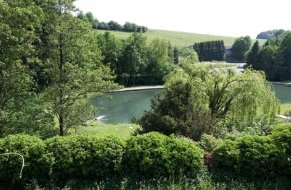
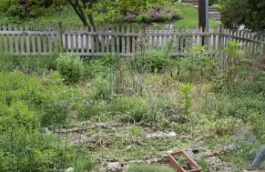
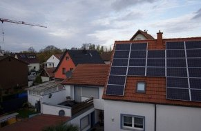
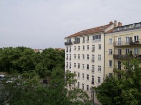
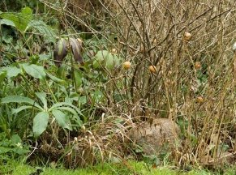

DSC_4104 Panorama
Versions
None yet
Historyrev 3
2Highlights −40you
1Paste settings from DSC_4471.NEFyou
0Original
Performance
No background work

Development set19 photographs · ← → to step






Overview
Crop, transform, straightenFrame, ratio and angle
PresetsSaved and imported settings
Basic
White balanceCustom
Temperature+6
Tint−2
ToneCustom
Exposure+0.35 EV
Contrast+12
Highlights−40
Shadows+25
Whites+8
Blacks−10
ColourCustom
Vibrance+15
Saturation0
Tone curveOne luminance curve
DetailSharpening and noise
PresenceTexture, clarity and dehaze
Colour mixerHue, saturation and lumin…
Lens correctionProfile and distortion
PerspectiveVertical and horizontal
VignetteDarken or lighten the corners
Opened DSC_4104 Panorama · the overview is drawn; 100% reads full-resolution windows1 agent connectedGPU render · 6 msFit · 2% · 2×